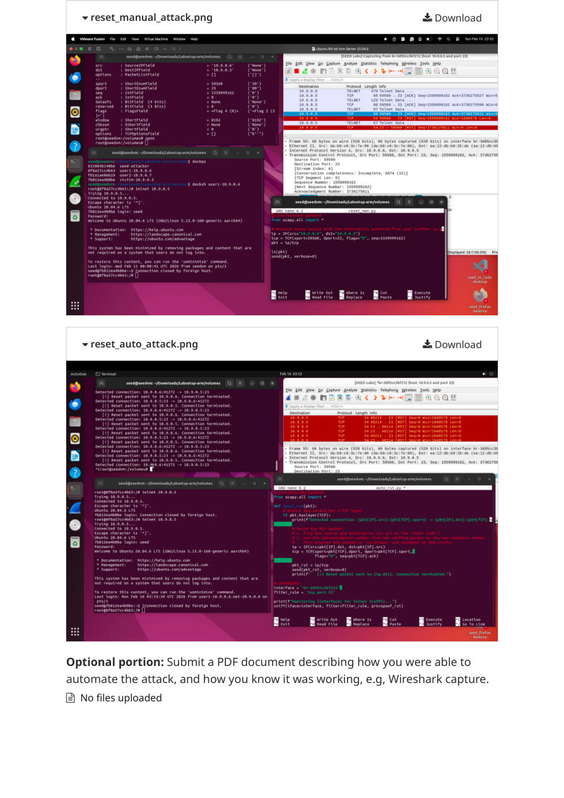

Associate Director of IT
Directed day-to-day IT operations for a healthcare nonprofit, supported infrastructure and access controls, and coordinated technical recovery and vendor work.
I'm Musa Scott, a cybersecurity researcher and U.S. Army veteran with experience leading IT operations, troubleshooting complex infrastructure, and investigating security incidents. My work combines practical operational judgment with graduate-level security research.
01 / ABOUT
My background includes enterprise IT support, infrastructure security, Active Directory administration, network troubleshooting, and operational leadership. Those experiences shape how I approach cybersecurity: establish the facts, understand the environment, identify the risk, and explain the impact.
At NYU Tandon, I expanded that foundation through hands-on networking, digital forensics, cryptography, and mobile security work. This portfolio highlights the projects I can explain and substantiate with source code, screenshots, and technical analysis.
02 / SELECTED PROJECTS
Real lab evidence, clear methodology, and a defender's perspective.

FEATURED CASE STUDYFour SEED Labs experiments covering SYN flooding and SYN cookies, forged TCP resets, session hijacking, and reverse-shell behavior. Each demonstrates how protocol mechanics translate into security risks.
ARP spoofing, digital forensics, and mobile security research will be published as their documentation and evidence are reviewed. Projects are only presented as completed once their supporting material is ready.
03 / EXPERIENCE
Directed day-to-day IT operations for a healthcare nonprofit, supported infrastructure and access controls, and coordinated technical recovery and vendor work.
Investigated repeated privileged-account lockouts using Windows security logs and Sysinternals tools. Traced suspicious activity and implemented firewall blocking to stop recurrence.
Served five years on active duty, supervised a seven-person section, and maintained accountability for approximately $30 million in military assets.
04 / EDUCATION & CREDENTIALS
M.S. Computer Science & Engineering · Cybersecurity concentration
Certified
In progress
Cybersecurity Analytics
05 / CONNECT
I'm exploring security operations, incident response, threat analysis, and security engineering opportunities in New York and beyond.